Gudruns gate
08Leiligheter, transformasjon og nybygg
Bolig · fritid · Nybygg · Ombruk · transformasjon · AntikvariskSe bildegalleri
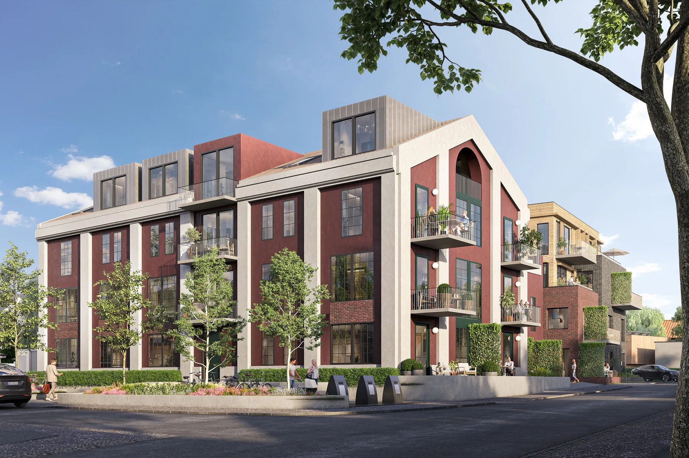
- Byggherre
- Godthåb Utvikling AS Karl-Ove Bjørnstad Eiendom AS
- Planlagt ferdigstilling
- 2026
- Medarbeidere
- Bodil Angard Rian Jørgen Tellefsen Relling Marianne Sørstrøm
Om prosjektet
Den gamle gjær- og spritfabrikken på Øya inngår i et boligprosjekt med både transformasjon og nybygg. Leiligheter i fabrikkbygningen forbindes med nye boliger og et felles hagerom.
Bilder & tegninger12 bilder


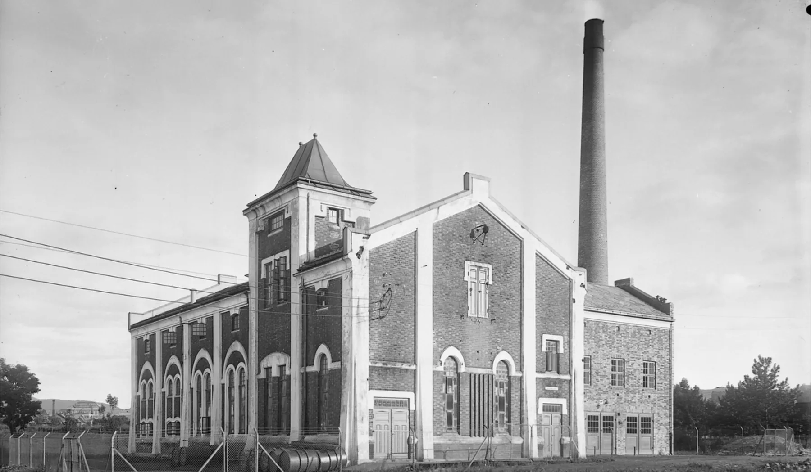
Forstørr
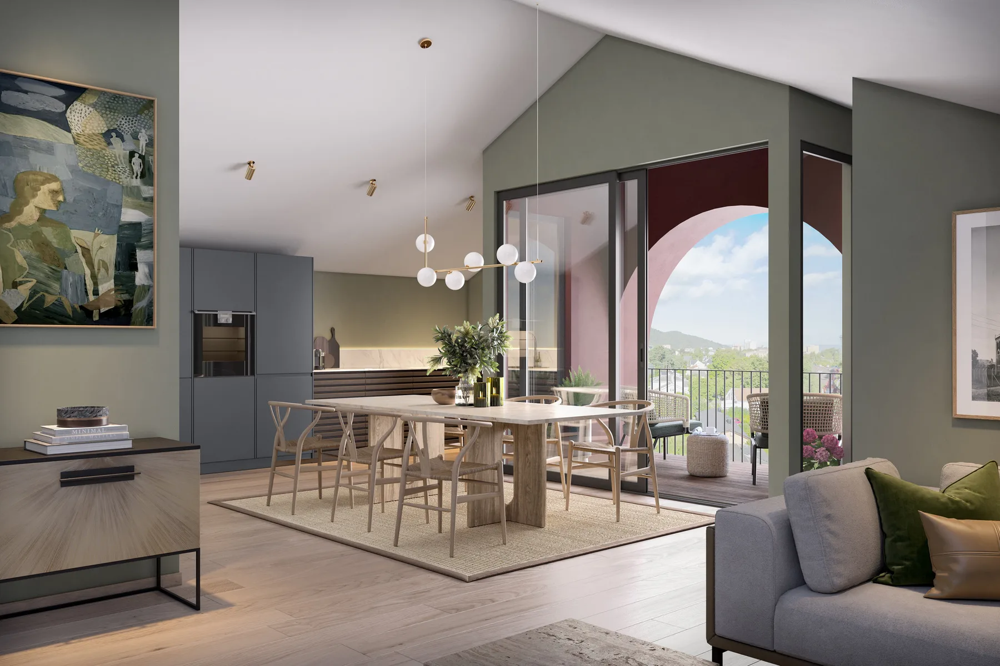
Forstørr
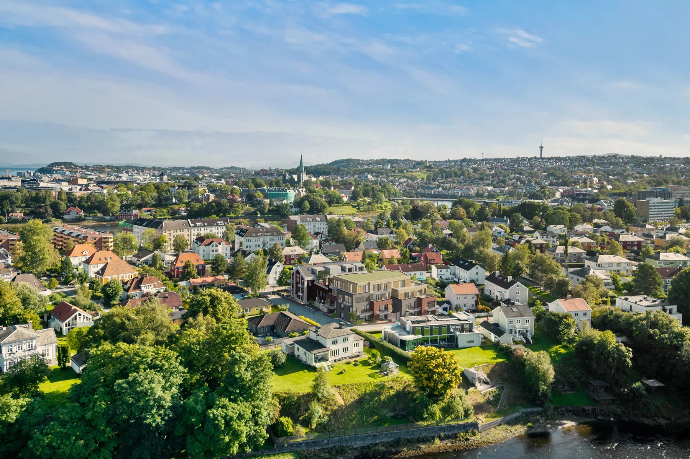
Forstørr
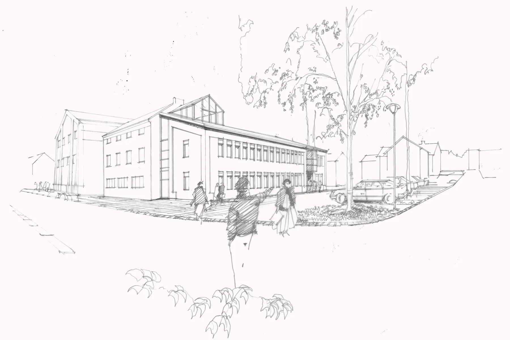
Forstørr
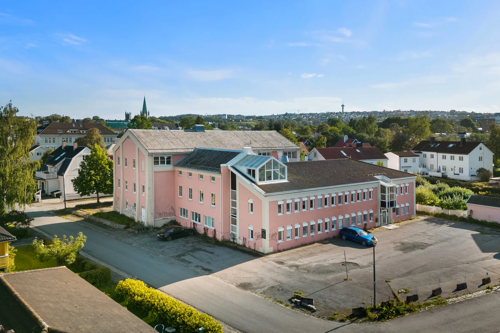
Forstørr
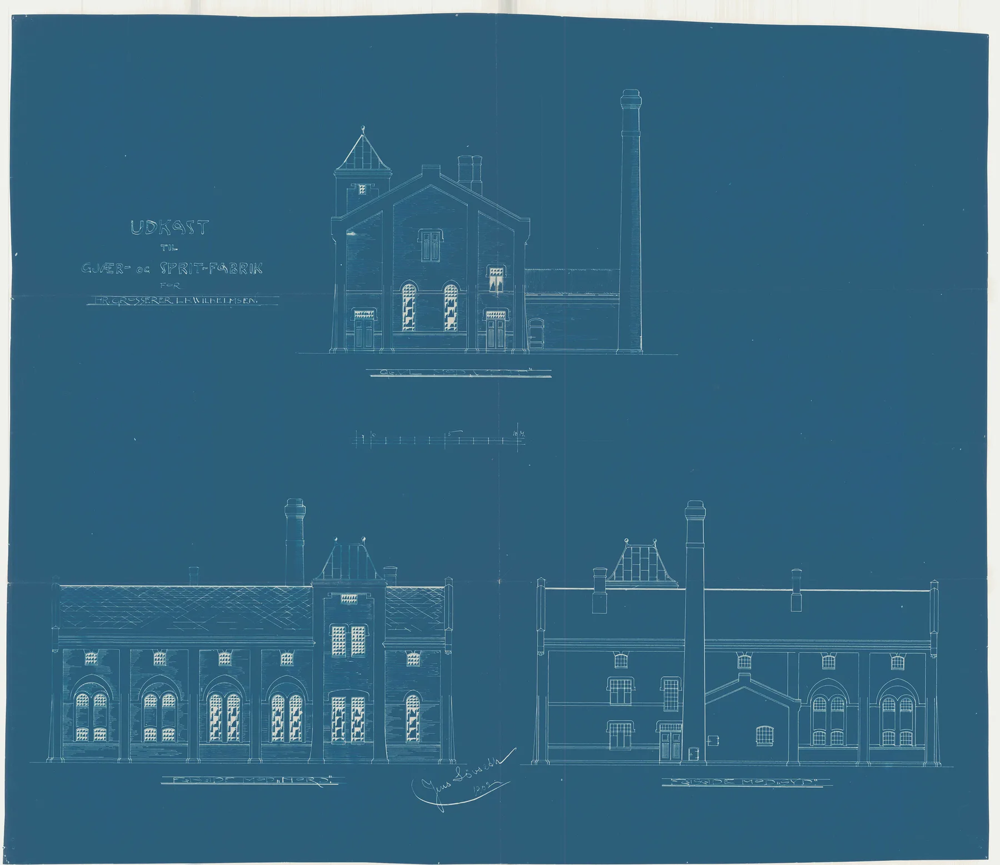
Forstørr
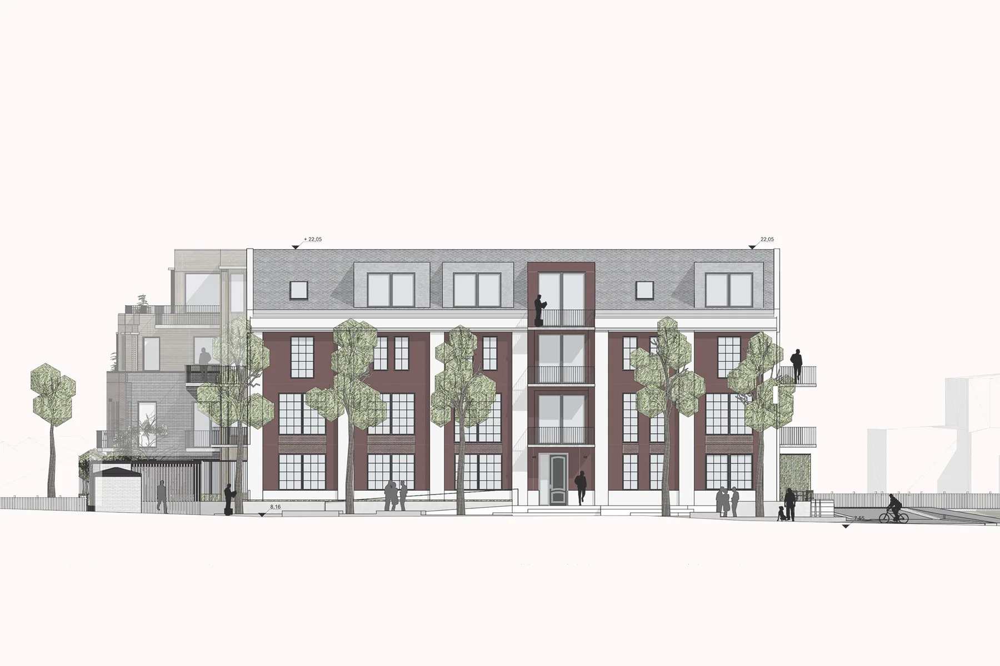
Forstørr
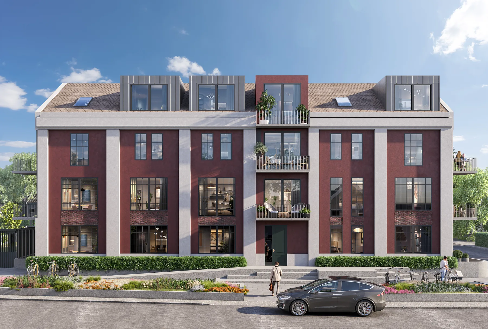
Forstørr
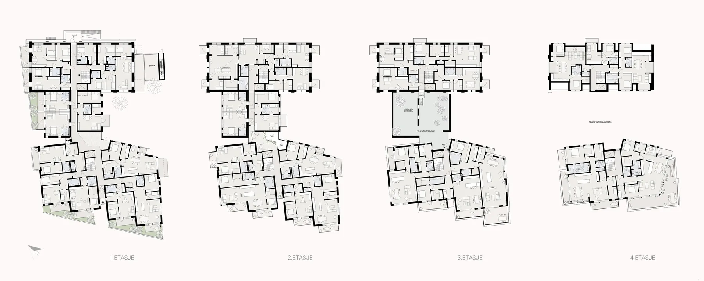
Forstørr
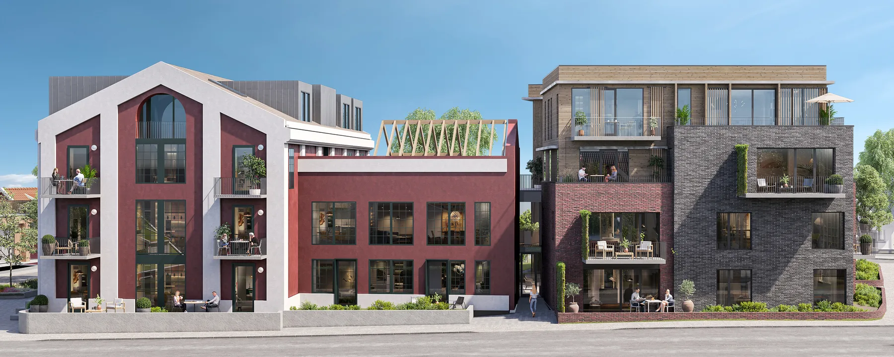
Forstørr
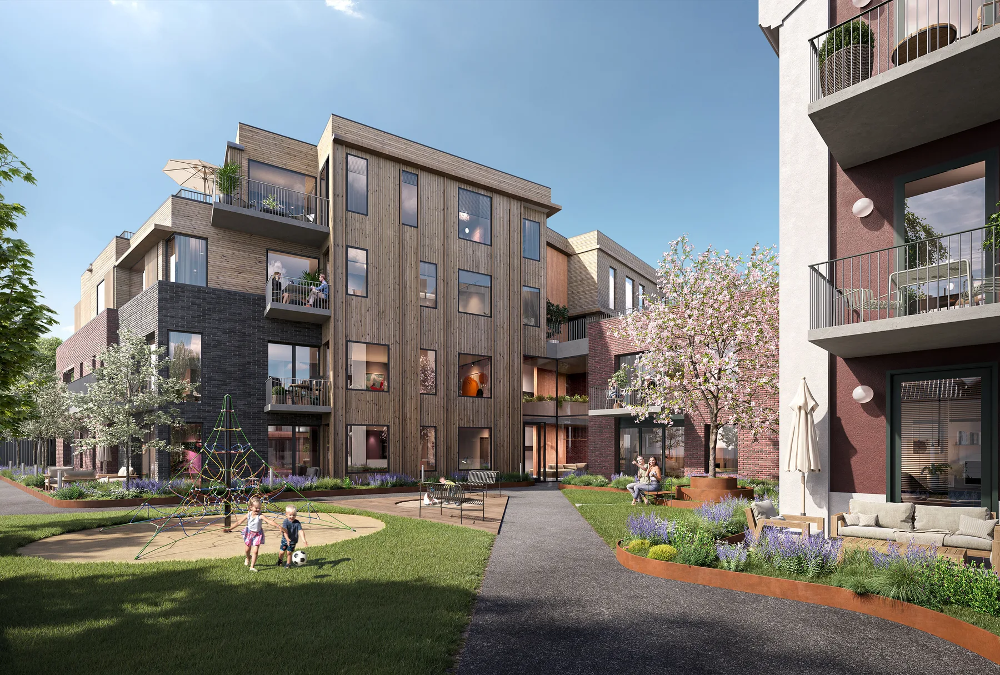
ForstørrIllustrasjon: Plyo · Historisk foto: Schrøder · Det historiske fabrikkbygget vil få ny fasade mot Guttorms gate. Illustrasjoner.: PLYO · Mellombygget bygges om til leiligheter og felles takterrasse. Illustrasjon: PLYO · Felles parkområde og lekeplass mellom byggene. Illustrasjon.: PLYO
La oss begynne med en samtale